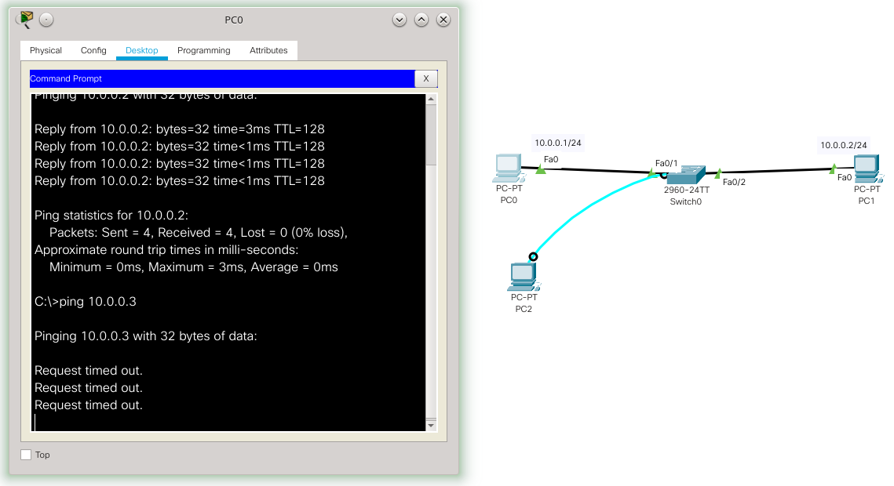

Ativar acesso remoto em roteadores e switches CISCO
UTFPR - Universidade Tecnológica Federal do Paraná, campus Campo Mourão
Autor: Prof. Dr. Luiz Arthur Feitosa dos Santos
E-mail: luizsantos@utfpr.edu.br
O acesso remoto é muito importante em um ambiente de rede, pois isso pode facilitar a vida do administrador de redes e agilizar suas tarefas. Todavia também é importante fazer isso da maneira correta para não trazer vulnerabilidades para a rede.
O acesso remoto neste caso pode ser visto como o “compartilhamento” via rede do ambiente de trabalho (ambiente onde são executados comandos). Existem vários programas que permitem esse tipo de ação, para usuários finais em ambientes desktop é comum fazer uso de programas como o LogMeIn, VNC, dentre outros similares.
Contudo em ambientes de infraestrutura de rede é mais comum fazer acesso remoto via Telnet e SSH. Sendo que o Telnet é um protocolo dos primórdios da computação que mesmo nos dias atuais é muito utilizado ainda. Entretanto, atualmente não é nada recomendável utilizar o Telnet, pois esse transmite tudo pela rede como texto puro, ou seja, qualquer um com um analisador de tráfego de rede pode capturar usuários/senhas de sistemas que utilizam Telnet. Assim, o seu sucessor natural é o SSH, que faz o mesmo que o Telnet e um pouco mais, e o melhor! Transmite todos os dados de forma criptografada, o que mantem a confidencialidade dos dados enviados pela rede.
Mesmo que o Telnet não seja recomendável devido a sua falta de segurança, ele ainda é muito utilizado e por isso recomendá-se que administradores de redes saibam como configurar e utilizar tanto cliente como o servidor Telnet.
A seguir são apresentados como habilitar, configurar e utilizar o acesso remoto em roteadores e switches CISCO, focando o SSH que é o método mais seguro e recomendado, mas em alguns casos há possibilidade de utilizar o Telnet ou HTTP.
Switches
É possível fazer acesso remoto também em switches, alguns possuem interface gráfica através de HTTP. Aqui iremos trabalhar com acesso via SSH em switches CISCO.
Lembrando que habilitar esse tipo de acesso trás mas comodidade e agilidade para o administrador, todavia aumenta o riscos de ataques cibernéticos. Então, caso o acesso remoto não seja altamente necessário não o habilite.
Acessando o terminal de configuração
Para iniciar vamos criar no simulador da CISCO (Packet Tracer) uma rede com um switch e dois computadores, tal como na figura a seguir:

No cenário de rede da figura anterior, a principio, não é necessário nenhuma configuração para o switch funcionar. Neste cenário só foi configurado o PC0 com o IP 10.0.0.1/24 e 10.0.0.2/24, para o PC1. O PC0 consegue acessar o PC1, e o contrário também - ou seja, a rede está funcional. Todavia nenhum desses PCs conseguem acessar/gerenciar o switch via rede, para que isso aconteça é necessário configurá-lo. No simulador isso é feito clicando em cima do switch e indo na aba CLI, tal como ilustrado na figura a seguir:

Agora para configurar o switch basta entrar com os comandos via terminal, e é possível por exemplo, habilitar o gerenciamento remoto. Todavia na vida real não dá para clicar em cima do switch, então provavelmente será necessário acessá-lo inicialmente via terminal serial e só depois de configurá-lo será possível acessar o switch via rede, facilitando assim o gerenciamento do mesmo.
Para fazer acesso via serial no simulador será necessário inserir um cabo console em um PC tal com ilustrado na figura a seguir, para esse exemplo iremos fazer esse acesso pelo PC2 que foi inserido só para essa tarefa, depois de colocar o cabo console na interface console do switch e RS323 do PC, clique no PC e na aba Desktop clique em Terminal, tal como na figura a seguir:

Feito isso será apresentada uma tela para a configuração do console serial, a principio já está tudo configurado corretamente, então é só clicar em OK. Na vida real seria necessário instalar algum programa de acesso a console serial e ai configurar com as opções que estão na figura a seguir. Mas o procedimento é basicamente o mesmo.

Depois de clicar em OK, será apresentado um terminal, que representa o terminal do switch, ou seja, você está acessando o switch remotamente via cabo serial.
Após acessar o switch via cabo serial, o ambiente de configuração é mesmo que obter o terminal clicando no ícone do switch, tal como apresentado anteriormente, ou seja, conseguindo o terminal, a configuração é a mesma para ambas as alternativas no simulador (configurar clicando no switch ou via cabo serial).
Configurando o switch para ser acessado remotamente
Com acesso ao console/terminal do switch é possível configurá-lo com um IP para realizar o acesso remoto via rede TCP/IP. Para isso é necessário executar os seguintes comandos:
Switch>enable
Switch#configure terminal
Enter configuration commands, one per line. End with CNTL/Z.
Switch(config)#interface vlan 99
Switch(config-if)#ip address 10.0.0.3 255.255.255.0
Switch(config-if)#no shutdown
Switch(config-if)#ip default-gateway 10.0.0.254
Switch(config)#
Bem, os comandos anteriores habilitaram a configuração no switch enable e configure terminal. Depois, configuramos o IP 10.0.0.3/24 na interface de rede chamada vlan 99, que é uma VLAN que deve ser vinculada posteriormente com as portas do switch, para ditar quem tem acesso remoto ao switch. Opcionalmente também foi configurado um gateway padrão, desta forma é possível, a principio, acessar o switch de outras redes, é claro que isso deixa o switch mais vulnerável à ataques externos, então só coloque um gateway padrão se for estritamente necessário, caso contrário deixe apenas o acesso à rede local.
Configurado o IP na VLAN 99, agora basta informar qual porta do switch tem acesso a essa VLAN, exemplo:
Switch(config)#
Switch(config)#interface f0/2
Switch(config-if)#switchport access vlan 99
Switch(config-if)#
%LINEPROTO-5-UPDOWN: Line protocol on Interface Vlan99, changed state to up
Switch(config-if)#
Neste caso a porta f0/2 do switch foi atrelada a VLAN 99, o que dará acesso ao IP do switch e consequentemente o PC1 poderá acessar o switch remotamente via TCP/IP. Para verificar isso é possível pingar o IP do switch a partir do PC1, tal como apresentado na figura a seguir:

Note que não é possível acessar o switch via PC1, pois esse não está vinculado a VLAN 99. Isso é interessante em termos de segurança, pois assim é possível limitar os hosts que possuem acesso ao switch - é claro que isso não é perfeito, pois a segurança está relacionada á porta do switch e não a um host/usuário específico. A figura a seguir mostra que não é possível acessar o switch a partir do PC0.

Agora temos que habilitar e configurar o serviço de SSH no switch.
Configurando o SSH
Primeiro é necessário gerar a chave de criptografia utilizada pelo SSH para manter os dados confidenciais. Para isso é recomendável configurar o nome do host e do domínio, tal como é ilustrado pelos comandos a seguir:
Switch>enable
Switch#configure terminal
Enter configuration commands, one per line. End with CNTL/Z.
Switch(config)#hostname sw0
sw0(config)#ip domain name cyberinfra
sw0(config)#crypto key generate rsa
The name for the keys will be: sw0.cyberinfra
Choose the size of the key modulus in the range of 360 to 2048 for your
General Purpose Keys. Choosing a key modulus greater than 512 may take
a few minutes.
How many bits in the modulus [512]:
% Generating 512 bit RSA keys, keys will be non-exportable...[OK]
sw0(config)#
Antes de continuar com o SSH é recomendável habilitar a senha para acessar o terminal de configuração da administração do switch (que é obtida após o comando enable), isso é feito pelo comando:
sw0(config)#enable password 123mudar
*Mar 1 1:58:28.322: RSA key size needs to be at least 768 bits for ssh version 2
*Mar 1 1:58:28.323: %SSH-5-ENABLED: SSH 1.5 has been enabled
sw0(config)#
Neste caso colocamos a senha 123mudar.
O próximo passo é configurar realmente o usuário e senha do SSH:
sw0(config)#username admin password abc123
sw0(config)#
Neste exemplo o nome do usuário é admin e a senha é abc123, para título de exemplo estamos utilizando nomes de usuários e senhas fáceis de lembrar, mas na prática utilize usuários e senhas apropriadas. Note que as senhas para acessar o SSH e ter acesso ao terminal de configuração são diferentes, elas podem ser iguais, mas isso seria menos seguro.
Para finalizar é necessário configurar o SSH para dar acesso ao terminal do switch, isso é feito com os comandos a seguir:
sw0(config)#ip ssh version 2
Please create RSA keys (of at least 768 bits size) to enable SSH v2.
sw0(config)#line vty 0 15
sw0(config-line)#transport input ssh
sw0(config-line)#login local
sw0(config-line)#end
sw0#copy running-config startup-config
Destination filename [startup-config]?
Building configuration...
[OK]
sw0#
Com o switch disponível via IP na rede, com o SSH habilitado e configurado, é possível acessar o servidor SSH no switch através de um cliente SSH, neste exemplo, o cliente SSH está no PC1. A figura a seguir apresenta um acesso via SSH do PC1 para o switch.

Na imagem anterior depois de testar a conectividade com o host, com o comando ping. Foi utilizado o comando ssh -l admin 10.0.0.3, para acessar o switch via SSH. Neste caso o switch está acessível pelo IP 10.0.0.3 com o usuário admin, para este usuário havíamos configurado a senha abc123.
Após isso, fica disponível o prompt de comando do switch.
Então, é possível executar o comando enable para ter acesso as configurações do switch, neste caso também foi configurado uma senha para o usuário mudar para o administrador do sistema, tal senha neste exemplo é 123mudar.
Em um cenário real, tanto com switch quanto com roteador, após configurar o servidor SSH não seria mais necessário utilizar o acesso via cabo serial.
Roteadores
É muito comum fazer o uso de acesso remoto à roteadores, já que esses são dispositivos acessíveis diretamente via rede, ou seja possuem IPs. Então, normalmente é muito comodo configurar um roteador remotamente.
Atenção - se você errar ao configurar um roteador remotamente, você pode perder o acesso a rede/roteador e consequentemente você será desconectado e pode chegar ao extremo de não ter mais como configurar o equipamento remotamente. Ou seja, você terá que fazer acesso local/físico à máquina e isso pode significar andar quilômetros para ter esse acesso físico. Então, é necessário cuidado redobrado ao executar comandos remotamente em equipamentos como roteadores.
Acessando o terminal de configuração
No caso de roteadores CISCO, se você estiver utilizando o simulador Packet Tracer da CISCO para estudar/treinar, basta clicar no ícone do roteador no cenário de rede e depois clicar na aba CLI. Tal como ilustrado no cenário de rede da figura a seguir.

Na prática (não no simulador), pode ser necessário utilizar um cabo serial conectando um computador ao roteador, para iniciar a configuração. Tal como foi feito na configuração do switch (o texto anterior detalha melhor a conexão serial) e é apresentado nas figuras a seguir:
Na figura anterior é adicionado um computador (PC2) ligado a um cabo serial/console ao roteador, depois (no simulador) clicamos no PC2, Desktop e Terminal, onde ai aparece a configuração do terminal, mas não é necessário configurar nada, só pressionar OK. Após isso é apresentado o terminal/console de configuração do roteador, ou seja, é feita a conexão serial entre PC2 e roteador. Tal como ilustra a figura a seguir:
Lembrando que no simulador não é necessário ter um computador ligado no cabo serial, é só clicar no dispositivo e acessar o CLI deste dispositivo (roteador/switch). Todavia é bom saber fazer isso, pois na vida real o processo inicial pode ser este.
Configurando o roteador para ser acessado remotamente
Depois de ter acesso ao terminal do roteador é necessário configurar IPs para poder acessar via rede. Ou seja, é necessário configurar IPs nas interfaces do roteador - que é o básico a se fazer em um roteador.
Um exemplo de configuração de IPs no roteador é apresentado a seguir:
Would you like to enter the initial configuration dialog? [yes/no]: no
Press RETURN to get started!
Router>enable
Router#configure terminal
Enter configuration commands, one per line. End with CNTL/Z.
Router(config)#interface g0/0/0
Router(config-if)#ip address 192.168.0.1 255.255.255.0
Router(config-if)#no shutdown
Router(config-if)#
%LINK-5-CHANGED: Interface GigabitEthernet0/0/0, changed state to up
%LINEPROTO-5-UPDOWN: Line protocol on Interface GigabitEthernet0/0/0,
changed state to up
Router(config-if)#interface g0/0/1
Router(config-if)#ip address 172.16.0.1 255.255.255.0
Router(config-if)#no shutdown
Router(config-if)#
%LINK-5-CHANGED: Interface GigabitEthernet0/0/1, changed state to up
%LINEPROTO-5-UPDOWN: Line protocol on Interface GigabitEthernet0/0/1,
changed state to up
Router(config-if)#
Na figura anterior foi configurado o IP 192.168.0.1/24 na interface GigabitEthernet0/0/0 do roteador e o IP 172.16.0.1/24 na interface GigabitEthernet0/0/1. Com essa configuração tanto PC0 quanto PC1 podem “pingar” o roteador. Tal como é ilustrado na figura a seguir:
Apesar do roteador já estar funcionando na rede, não é possível acessá-lo via SSH, pois esse normalmente está desabilitado. Portando agora basta ativar o SSH para o gerenciamento remoto.
Configurando o SSH
O processo de configuração do servidor SSH é o mesmo realizado no switch. A figura a seguir apresenta os passos para configurar o SSH no roteador do cenário simulado neste exemplo:
Router>enable
Router#configure terminal
Enter configuration commands, one per line. End with CNTL/Z.
Router(config)#hostname r0
r0(config)#ip domain name cyberinfra
r0(config)#crypto key generate rsa
The name for the keys will be: r0.cyberinfra
Choose the size of the key modulus in the range of 360 to 2048 for your
General Purpose Keys. Choosing a key modulus greater than 512 may take
a few minutes.
How many bits in the modulus [512]:
% Generating 512 bit RSA keys, keys will be non-exportable...[OK]
r0(config)#username admin password abc123
*Mar 1 1:11:53.304: RSA key size needs to be at least 768 bits for ssh version 2
*Mar 1 1:11:53.304: %SSH-5-ENABLED: SSH 1.5 has been enabled
r0(config)#enable password 123mudar
r0(config)#ip ssh version 2
Please create RSA keys (of at least 768 bits size) to enable SSH v2.
r0(config)#line vty 0 15
r0(config-line)#transport input ssh
r0(config-line)#login local
r0(config-line)#end
r0#
%SYS-5-CONFIG_I: Configured from console by console
r0#copy running-config startup-config
Destination filename [startup-config]?
Building configuration...
[OK]
r0#
Basicamente os comandos anteriores fazem:
-
enableeconfigure terminal- dão acesso á área de administração e configuração do roteador; -
hostname r0eip domain name cyberinfra- atribuem um nome e um domínio ao roteador, isso é recomendável para ajudar na criação da chave criptográfica; -
crypto key generate rsa- gera a chave criptográfica; -
username admin password abc123- cria um usuário chamado admin e com a senha abc123, tal usuário/senha será utilizado para acessar o roteador via SSH - lembre de utilizar usuários e senhas fortes, aqui é só um exemplo. -
enable password 123mudar- atribui uma senha que será requisitada quando o usuário tentar mudar para o modo configuração/administrador do roteador. Isso não é obrigatório mais é recomendável por motivos de segurança. De preferência utilize senhas diferentes para o usuário do SSH e essa senha; -
ip ssh version 2- configura a versão utilizada no SSH, neste caso a versão 2; -
line vty 0 15etransport input ssh- habilita o console via SSH; -
login local- configura o roteador para usar usuários/senhas locais durante o login.
Após essa configuração já é possível acessar o roteador via rede utilizando o SSH. Note que esse acesso pode ser feito de qualquer host da rede local, ou de outras redes/hosts que tenham acesso à esse roteador. Então habilitar o SSH no roteador é muito comodo, todavia é extremamente perigoso, desta forma recomendá-se o uso de ferramentas de segurança, tais como firewall, para evitar possíveis ataques.
A figura a seguir mostra o acesso do PC1 ao roteador, via SSH:

Na figura anterior o comando ssh -l admin 172.16.0.1 é o programa cliente que pede acesso ao servidor SSH, que está disponível no roteador 172.16.0.1, com o usuário admin. Neste caso do exemplo, a senha para acessar o SSH com admin é abc123. Após isso o usuário pode mudar para o modo configuração do roteador com o comando enable, no qual a senha do exemplo é 123mudar.
Em um cenário real, tanto com switch quanto com roteador, após configurar o servidor SSH não seria mais necessário utilizar o acesso via cabo serial.
Conclusão
O acesso remoto à switches e roteadores é muito útil na administração das redes de computadores. Todavia deve ser utilizado com cautela para não gerar problemas de segurança. Atualmente o método mais indicado é o uso do SSH, todavia esse deve ser configurado com porta distintas da padrão e o acesso de preferência deve ser local.
Referência
- CISCO. Routing and Switching Essentials - Companion Guide. Cisco Press. ISBN-13: 978-1-58713-318-3. 2014.
- https://www.thegeekstuff.com/2013/08/enable-ssh-cisco/.